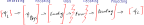
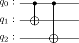
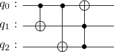

Quantum error correction codes (QECC) are crucial to the prospects of the quantum technology as well as extremely interesting from a theoretical point of view. Despite similarities to the classical error correction, there are fundamental distinctions, too. A naive attempt to generalize classical codes to work with quantum bits faces several conceptual challenges, such as no-cloning theorem and decoherence induced by a measurement. I got curious how far one can go in constructing a simple quantum ECC without worrying too much about those, using a simple machine learning model with little to no physics assumptions underneath. I think the experiment worked out pretty well, for instance, I’ll show how to get a 5 qubit code. Sure, most things appear to be obvious in retrospect, and rediscovering something that you know is possible is a completely different thing. Still, I found this to be a very interesting exercise with a couple of bonus take-aways, such as:
Measurements are not a necessary part of the error correction. Decoding can be a unitary operation (at least for some codes).
You can train the model on unitary errors only, general single-qubit error channels will be accounted for for free.
Classical repetition code
Following 99% of error correction tutorials I will start with the classical repetition code. And you know what, I do not even feel guilty, this is a great time-tested warm up. So, we are sending a classical bit along a noisy channel and it is flipped with a probability \(p\). The error probability can be suppressed if we are willing to send more bits. Namely, instead of sending 0 we send 000, instead of 1 we send 111. This is called encoding, we encoded a single logical bit into several physical bits. Due to errors, the message 000 can be corrupted in several ways: 1. 000 : no corruption, with probability \((1-p)^3\) 2. 100, 010, 001: single corrupted bit, with probability \(3 p(1-p)^2\) 3. 110, 011, 101: two corrupted bits, with probability \(3 p^2(1-p)\) 4. 111: all bits flipped, with probability \(p^3\)
Same holds for the 111 message.
Now, if the receiver sees any message except 000 or 111 he knows there was an error somewhere. He can try to fix the error by taking a majority vote, e.g. he assumes that 100 means 0 while 101 means 1. If the single-bit errors are much more likely than two-bit or three-bit errors, this decoding strategy works. More precisely, it succeeds in cases (1) and (2) but fails in cases (3) and (4). The overall success probability is therefore \((1-p)^3+3p(1-p)^2\) and for \(p>1/2\) it is in fact greater than \(1-p\), the success probability of the unencoded message.
Conceptual difficulties with QECC
Now instead of sending a classical bit we want to send a qubit, also subject to noise. Can we use a similar strategy to protect the quantum bit? Textbooks often mention several apparent problems that make the quantum case sufficiently different from the classical.
Qubit states are continuous. Instead of sending just 0 or 1 we need to be able to send an arbitrary superposition \(|\psi\rangle=\alpha|0\rangle+\beta|1\rangle\).
As a consequence, errors are also continuous. For example, instead of a full bit flip \(X\) we can have ‘just a bit’ of a bit flip \(R_X(\theta)=\cos(\theta/2)-i X \sin(\theta/2)\) with very small \(\theta\). There are also additional error types with no classical counterparts, such as the phase flip error \(Z\). General single-qubit unitary error is a linear combination \(U=\alpha_0+\alpha_1 X+\alpha_2 Y+\alpha_3 Z\).
Quantum states can not be cloned. This means that for an unknown quantum state \(|\psi\rangle\) we can not construct and transmit e.g. \(|\psi\rangle\otimes|\psi\rangle\otimes|\psi\rangle\) as a plain generalization of the repetition code, although that would definitely help.
When the message is received, we need to look at it to decide if there was an error and choose a correction. But looking at the quantum states can break the coherence that we were looking to preserve.
We now know that all these issues can be elegantly resolved and the modern theory of error correction is rich and beautiful. My personal agenda for this small project was to see how far can one go with a black-box approach, sweeping all conceptual problems under the rug. The main two assumptions are - We need to use several physical qubits to safeguard a single logical qubit. - We only try to protect against single-qubit errors.
Machine learning QECC
Here is an architecture that I have in mind.

First, we embed a logical qubit into \(n\) physical ones. I will do this in the simplest possible way \(|\psi\rangle \to |\psi\rangle\otimes |0\rangle^{n-1}\), i.e. assuming that the first physical qubit is the logical state to be transmitted while other physical qubits are initialized in \(|0\rangle\) states. The initial embedding is in fact irrelevant, because after that I allow for an arbitrary encoding transformation \(U_{encoding}\). It is only required to be unitary. The encoding stage does the heavy lifting, and the encoding unitary is the main variable to be optimized. After that we add an error layer, which can consist of arbitrary single-qubit unitary errors. Then goes the decoding layer, which we will trust to recover the information about the logical qubit (it will also be trained). I will assume that the decoding layer is also a unitary. At the final step, the physical qubit state must somehow be projected onto the single-qubit state which will be our final, received and corrected state.
If you are familiar with quantum error correction, the assumption that decoding is a unitary operation and hence makes no explicit reference to syndrome measurements and things of that sort may look suspicious. We’ll see that it works, and make some comments afterwards.
Design choices
Projecting the final state
There are still details to be filled in. One is to specify how to get a single-qubit logical state from the final state of the physical qubits. Similarly to the embedding step, I will assume that the relevant information is contained exclusively in the first physical qubit. Then, successful error correction implies that the first physical qubit is unentangled with the others after the decoding step and has the same state it had before the encoding.
Note that the rest of the physical qubits will end up in different states \(|e\rangle_{n-1}\) depending on the error that have been corrected. Requiring that the final state is \(|\psi\rangle\otimes |0\rangle^{n-1}\) regardless of the error is too strong and can not be satisfied for any interesting set of errors.
Dealing with continuum
Next, how do we deal with the continuum of states and errors? I guess that a truly black-box approach would be to generate a large set of initial states and single-qubit errors and train the model using all this data. If successful, check on the test data to exclude overfitting. I’m sure that would work, but here I will take a shortcut and exploit the linearity of the whole construction. Denote by \(U(E)\) the full unitary of the encoding+error+correction process, for some error \(E\)
For a given initial state \(|\psi\rangle=\alpha |0\rangle+\beta |1\rangle\) and a fixed error \(E\), the final state can be reconstructed from the action on \(|0\rangle\) and \(|1\rangle\) states
Similarly, if we can correct errors corresponding to \(X, Y\) and \(Z\) unitaries on a given qubit, we will be able to correct an arbitrary linear combination of them, which is unitary. Indeed, say we can correct both \(X\) and \(Y\) errors \[\begin{align*}
|\psi\rangle\otimes |0\rangle^{n-1}\to U(X) \to |\psi\rangle\otimes |x\rangle_{n-1} \ ,\\
|\psi\rangle\otimes |0\rangle^{n-1}\to U(Y) \to |\psi\rangle\otimes |y\rangle_{n-1} \ .
\end{align*}\] Then their unitary linear combination will also be corrected in a sence that the state of the first physical qubit is the original encoded state \[\begin{align*}
|\psi\rangle\otimes |0\rangle^{n-1}\to U(aX+bY) \to |\psi\rangle\otimes\left(a|x\rangle_{n-1}+b|y\rangle_{n-1}\right) \ .
\end{align*}\] In fact, correcting \(X,Y\) and \(Z\) errors on any of the qubits is sufficient to correct their arbitrary linear combination, including non-unitary ones and those acting on different qubits. More on that later.
Implementation
Here is a code that implements the model. I do no use any quantum framework and deal with unitary matrices directly. That requires making a few tensor products here and there, but nothing cumbersome. I include the code right below in order to make this notebook/post self-contained, but do not go into detailed explanations. Here are several technical highlights though. - I use JAX as a numerical optimization backend. This why all the jnps instead of nps. - I take a very low-key approach to optimization over unitary matrices, parametrizing them by Hermitian matrices \(U=e^{i H}\). Basis in Hermitian matrices can be chosen to consist of \(e_{ii}, e_{ij}+e_{ji}\) and \(i(e_{ij}-e_{ji})\), where \(e_{ij}\) is a matrix with all elements zero except one at position \(ij\). Matrix exponentiation is an expensive procedure and to scale the code to more qubits a better parametrization of the unitary group is required, e.g. as done here QGOPT. - I choose the loss associated with an error correction process \(U(E)\) in the following way. Let \(|\Psi_0\rangle\) be the image of \(|0\rangle\) and \(|\Psi_1\rangle\) of \(|1\rangle\)\[|\Psi_0\rangle=U(E)|0\rangle\otimes |0\rangle^{n-1},\quad |\Psi_1\rangle=U(E)|1\rangle\otimes |0\rangle^{n-1}\ \ . \] The loss is \[L(E) = 2-L_Z-L_X, \qquad L_Z=\langle \Psi_0|Z_1|\Psi_0\rangle, \qquad L_X=\operatorname{Re} \langle \Psi_0|X_1|\Psi_1\rangle \ .\] The term \(L_Z\) is maximal \(L_Z=1\) when \(|\Psi_0\rangle=|0\rangle \otimes |e\rangle_{n}\), i.e. when the \(|0\rangle\) state of the first physical qubit is preserved by the error correction. If \(|0\rangle\) is mapped to a mixed state or to a pure state different from \(|0\rangle\) we have \(L_Z<1\). The term \(L_X\) is maximal when the \(|\Psi_1\rangle=X_1 |\Psi_0\rangle\). If \(|0\rangle\otimes|0\rangle^{n-1}\to|0\rangle \otimes |e\rangle_{n}\), this condition implies that \(|1\rangle\otimes|0\rangle^{n-1} \to |1\rangle \otimes |e\rangle_{n}\). By linearity, this is sufficient for an arbitray input state to be corrected when subject to this error. - The total loss is the sum of individual losses over all \(X, Y, Z\) errors acting on each qubit \[L(E)=\sum_{i=1}^{n}\left(L(X_i)+L(Y_i)+L(Z_i)\right) \ .\] However, we may wish to correct only a subset of errors, say only \(X\) errors. Then include only those in the loss function.
# Pauli matrices.x_mat = jnp.array([[0, 1], [1, 0]])y_mat = jnp.array([[0, -1j], [1j, 0]], dtype=jnp.complex64)z_mat = jnp.array([[1, 0], [0, -1]])pauli = (jnp.identity(2), x_mat, y_mat, z_mat)# Parametrized unitary matrices.class UnitaryLayer:def__init__(self, num_qubits):self.num_qubits = num_qubitsself.num_params =4**num_qubits@staticmethoddef hermitian_basis(num_qubits): d =2**num_qubits diag_basis = [jnp.zeros((d, d), dtype=jnp.complex64).at[i, i].set(1) for i inrange(d)] off_diag_real_basis = [jnp.zeros((d, d), dtype=jnp.complex64).at[i, j].set(1).at[j, i].set(1) for i inrange(d) for j inrange(i)] off_diag_im_basis = [jnp.zeros((d, d), dtype=jnp.complex64).at[i, j].set(1j).at[j, i].set(-1j) for i inrange(d) for j inrange(i)]return jnp.array(diag_basis+off_diag_real_basis+off_diag_im_basis)def unitary(self, params): generator = jnp.tensordot(self.hermitian_basis(self.num_qubits), params, axes=((0, ), (0, )))return expm(1j*generator)# Matrices corresponding individual single-qubit errors. class ErrorLayer:def__init__(self, num_qubits, errors=pauli):self.num_qubits = num_qubitsself.errors = errorsdef unitary(self, q, e): error_list = [self.errors[e] if i==q else jnp.identity(2) for i inrange(self.num_qubits)]returnreduce(jnp.kron, error_list)def all_error_unitaries(self): single_error_unitaries = [self.unitary(q, e) for q inrange(self.num_qubits) for e inrange(len(self.errors))] id_error = jnp.identity(2**self.num_qubits)return jnp.array([id_error]+single_error_unitaries)# Model parameters as a namedtuple. ecc_params = namedtuple('ECCparams', ['encoding_params', 'decoding_params'])class ECCmodel:def__init__(self, num_qubits, error_layer, params=None):self.num_qubits = num_qubitsself.error_layer = error_layerself.encoding_layer = UnitaryLayer(num_qubits)self.decoding_layer = UnitaryLayer(num_qubits)self.params = params@staticmethoddef embed(initial_state, num_qubits):"""Take |psi> and output |psi>|0,0,0, ...> """return jnp.kron(initial_state, jnp.zeros(2**(num_qubits-1)).at[0].set(1))def final_state(self, initial_state, encoding_unitary, decoding_unitary, error_unitary): s = decoding_unitary @ error_unitary @ encoding_unitary @ initial_statereturn sdef loss(self, params, error_unitary): encoding_unitary =self.encoding_layer.unitary(params.encoding_params) decoding_unitary =self.decoding_layer.unitary(params.decoding_params) final_states = []for initial_state_1q in [[1,0], [0,1]]: initial_state =self.embed(jnp.array(initial_state_1q, dtype=jnp.complex64), self.num_qubits) final_state =self.final_state(initial_state, encoding_unitary, decoding_unitary, error_unitary) final_states.append(final_state) Psi_0, Psi_1 = final_states X1 =reduce(jnp.kron, [x_mat]+[jnp.identity(2)]*(self.num_qubits-1)) Z1 =reduce(jnp.kron, [z_mat]+[jnp.identity(2)]*(self.num_qubits-1)) Z_avg = jnp.real(Psi_0.conj() @ Z1 @ Psi_0).sum() X_off_diag = (Psi_0.conj() @ X1 @ Psi_1).sum()return2-Z_avg-jnp.real(X_off_diag)def train(self, opt_options=OptOptions(num_iterations=1000)): error_unitaries =self.error_layer.all_error_unitaries()def loss(params): losses = vmap(lambda error_u: self.loss(params, error_u))(error_unitaries)return losses.sum()/len(error_unitaries) initial_params = random.uniform(random.PRNGKey(opt_options.random_seed), shape=(2, self.encoding_layer.num_params)) initial_params = [ecc_params(initial_params[0], initial_params[1])]# `mynimize` is just my custom optimization routine with a JAX backend. results = mynimize(loss, initial_params, opt_options) self.params = results.best_result.best_paramsreturn results.best_result
WARNING:absl:No GPU/TPU found, falling back to CPU. (Set TF_CPP_MIN_LOG_LEVEL=0 and rerun for more info.)
Quantum repetition code
Now let us put the model to use. It is well known that with three physical qubits one can protect a logical qubit from \(X\) erorrs. This is a generalization of the classical repetition code. Let’s see if our model can do that.
CPU times: user 15.6 s, sys: 62.7 ms, total: 15.7 s
Wall time: 15.6 s
Text(0.5, 1.0, 'Loss history')
OK, the optimization is clearly successfull. Of course there is always a chance that there are mistakes in the code or in the definition of the loss function itself. I will give a more thorough verification for the 5-qubit code later. By modifying and re-running the cell above you can also do some simple sanity checks – see if the same results can be achieved with fewer qubits (num_qubits\(\to\) 2) or if more errors can be corrected (errors\(\to\)[x_mat, y_mat]). Neither works, of course.
Standard description of the quantum repetition code
Now that we have seen that a black-box approach works it is instructive to revisit the usual construction of the error correcting codes. Here is how the quantum repetition code, which is able to correct \(X\) errors, works. Encoding is done as follows
This does not violate the no-cloning theorem because the new state is not \(|\psi\rangle\otimes|\psi\rangle\otimes|\psi\rangle\). Coefficients \(\alpha\) and \(\beta\), which define the state, are not copied. This encoding can be done with the following circuit

Now say there was an \(X\) error acting on the first qubit during the transmission \[\alpha |000\rangle+\beta|111\rangle\to X_1 \to \alpha |100\rangle+\beta|011\rangle\] Can we detect an correct it? The problem is that measuring any of the qubits individually destroys their coherent superposition. A workaround is to make collective measurements \(Z_1Z_2\) and \(Z_1Z_3\), known as parity checks. Both terms in the corrupted decomposition have the same eigenvalues and hence coherence is preserved. Parity checks allow to identify qubit 1 as corrupted, and correct the error by applying \(X_1\).
Can we do without a measurment?
Measurements and post-selected correction operators were not part of our model, where the decoder is unitary. Is there something wrong with our approach, or measurements are not strictly necessary? I do think they aren’t, but you would not be able to tell from most of the introductory literature. To illustrate the situation for the repetition code, I came up with the following unitary circuit, which can correct/decode any single \(X\) error in the repetition code

It is straightforward to check that it transforms vectors with single \(X\) errors as follows. \[\begin{align*}
I_{}:\quad |000\rangle\to |000\rangle,\quad |111\rangle\to |100\rangle\\
X_1:\quad|100\rangle\to |011\rangle,\quad |011\rangle\to |111\rangle\\
X_2:\quad|010\rangle\to |101\rangle,\quad |010\rangle\to |110\rangle\\
X_3:\quad|001\rangle\to |001\rangle,\quad |110\rangle\to |101\rangle\\
\end{align*}\] Important things to note here are that the first qubit value becomes the majority vote, while two other qubit registers agree within the same line. I do not claim that our numerical optimization above discovered exactly this circuit and/or the repetition encoding, but it must be something equivalent.
5 qubit code
The smallest amount of physical qubits that can correct against arbitrary single-qubit errors is known to be 5. Let me sketch a proof. Please! No, it’s not needed to make my points, I just like it a lot. OK? Great!
If a code can correct an arbitrary single-qubit error, it can also recover from the loss of two qubits. If we’d have an ECC with just four qubits, we could separate them into two groups 4=2+2. Each group could recover the encoded state, which produces two copies of it. This violates the no-cloning theorem! Lowering the number of qubits does not help, of course.
Good, let us try to train the model with 5 physical qubits and the error operators that span all single-qubit errors.
CPU times: user 2min 55s, sys: 1.3 s, total: 2min 56s
Wall time: 2min 55s
Text(0.5, 1.0, 'Loss history')
The loss function indicates that our model learns a 5-qubit ECC. You may wish to check that it does not work with fewer qubits, e.g. num_qubits$$4. Another empirical observation is that if the model is trained on \(X\) and \(Z\) errors only, it will be able to correct \(Y\) errors as well (passes verification below). This does not seem to be guarantied in general, as counter-examples exist.
Verification
To convince you and myself that the loss plot above does reflect learning a genuine ECC here I will carry out an independent check. First let me note that the way errors enter in the model we trained is not completely general. The most general evolution of the initial state under an interaction with an environment is described by a quantum channel
Here \(\rho\) is the final density matrix of the first physical qubit, which by our assumption corresponds to the logical qubit after error correction process. The partial trace is taken with respect to the other physical qubits. Matrices \(M_a\) are called Kraus operators and could be thought of as a combination \[M_a = U_{decoding} E_a U_{encoding} \ .\] We trained our model on cases where the error part \(E_a\) in each Kraus operator \(M_a\) is a single Pauli operator acting on some qubit, e.g. \(E_a=X_2\). A general single-qubit error corresponds to each \(E_a\) being a linear combination of single-qubit unitaries \[E_a=\sum_{i=1}^{n} c_{ai} U_i.\] For example, one of them could be something like \(E_1 = c_{11}(0.13 X_1+2.7 Y_1)+c_{12} Z_2 + c_{13} (Y_1-0.55 Z_1)\). Kraus operators are not required to be unitary, but only to satisfy the completeness relation \(\sum M_a^\dagger M_a=1\). Our model was trained so that \(M_a |\Psi\rangle=|\psi\rangle \otimes |\text{some state}\rangle\) when \(M_a\) only contains Pauli errors acting on a single qubit. However, this equation extends to arbitrary single-qubit errors by linearity.
To perform an independent check I generate a bunch of initial states and generic single-qubit errors \(E_a\). I will restrict to channels with single (non-normalized) Kraus operators for simplicity. If (normalized) density matrices \[ \rho_a=\frac{M_a|\Psi\rangle\langle\Psi|M_a^\dagger}{\langle \Psi|M_a^\dagger M_a|\Psi\rangle} \] reproduce the correlators of the original state for any \(M_a\), they surely do for any sum over \(M_a\). Thus, I will check that
\[\langle\psi|X|\psi\rangle=\operatorname{tr}\rho_a X,\quad \langle\psi|Y|\psi\rangle=\operatorname{tr}\rho_a Y,\quad \langle\psi|Z|\psi\rangle=\operatorname{tr}\rho_a Z .\]
Essentially, we’ll do the full state tomography of the first physical qubit. This of course should be equivalent to the loss function we used during training, but I think reformulation is useful as an additional consistency check.
# Random seed, JAX-stylekey, *keys = random.split(random.PRNGKey(0), 3)# Sample sizes.num_qubits = model.num_qubitsnum_initial_states =100num_errors =100# Initial states, drawn at random and normalized.initial_states = random.uniform(keys[0], shape=(2, num_initial_states, 2)) # 2x real componentsinitial_states = initial_states[0]+1j*initial_states[1] # combine into 1x complext componentsdef norm_state(s):return jnp.sqrt(jnp.real(s.conj()*s).sum())norms = [norm_state(s) for s in initial_states]initial_states = [s/norm_state(s) for s in initial_states]### Defining random linear combinations of single-qubits errors is a bit cumbersome, but purely technical.# Random single-qubit errors.random_1q_unitaries = unitary_group.rvs(2, size=num_errors*num_qubits).reshape(num_errors, num_qubits, 2, 2)random_coefficients = random.uniform(keys[1], (num_errors, num_qubits))def error_at_position(error_u, i, num_qubits):"""Takes U and returns tensor product 1 x 1 x ... U x 1 ... x 1 with U at position i.""" ops = [jnp.identity(2)]*num_qubits ops[i] = error_ureturnreduce(jnp.kron, ops)def make_error_operator(errors, coeffs): """Takes a list of 1q errors and puts error 1 on qubit 1, error 2 on qubit 2, etc, then takes their liner combination.""" num_qubits =len(errors) full_errors = [error_at_position(u, i, num_qubits) for i, u inenumerate(errors)]returnsum([u*c for u, c inzip(full_errors, coeffs)])errors = [make_error_operator(errors, coeffs) for errors, coeffs inzip(random_1q_unitaries, random_coefficients)]errors = jnp.array(errors)
So finally we have a bunch of initial states and general (non-unitary) single-qubit error operators. Let’s see directly the the model is able to correct them.
params = model.paramsu_encoding = model.encoding_layer.unitary(params.encoding_params)u_decoding = model.decoding_layer.unitary(params.decoding_params)def density_matrix(s):"""Density matrix of the first qubit.""" num_qubits =int(jnp.log2(len(s))) s = s.reshape([2]*num_qubits) axes =list(range(1, num_qubits)) rho = jnp.tensordot(s, s.conj(), axes=(axes, axes))return rhodef tomography_loss(initial_state, error_u): final_state = u_decoding @ error_u @ u_encoding @ ECCmodel.embed(initial_state, num_qubits)# For non-unitary errors the state should be normilized. final_state = final_state/jnp.sqrt(jnp.real((final_state.conj()*final_state).sum())) final_rho = density_matrix(final_state) pauli_averages_initial = [(initial_state.conj() @ p @ initial_state).sum() for p in [x_mat, y_mat, z_mat]] pauli_averages_final = [jnp.trace(final_rho @ p) for p in [x_mat, y_mat, z_mat]] loss =sum([(avg_i - avg_f)**2for avg_i, avg_f inzip(pauli_averages_initial, pauli_averages_final)])return jnp.real(loss)losses = [tomography_loss(s, u) for s in initial_states for u in errors]avg_loss =sum(losses)/len(losses)print(f'Average loss from tomography: {float(avg_loss)}')
Average loss from tomography: 2.6336230973811325e-09
OK, the average tomographic loss is basically within the machine precision, which makes a strong case for the fact our simple model did learn a genuine ECC code on 5 qubits. This wraps up my experiment!